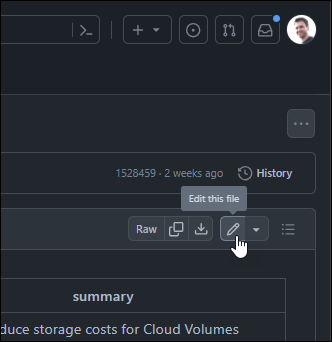

GitHub에서 NetApp 기술 콘텐츠에 기고하십시오
 변경 제안
변경 제안
NetApp 제품 및 서비스 설명서는 오픈 소스 에 있습니다. 따라서 개선, 수정 및 제안을 통해 콘텐츠에 기여할 수 있습니다. GitHub 계정과 작은 이니셔티브만 있으면 됩니다.
개요
다음 옵션을 사용하여 문서에 기여할 수 있습니다.
-
일반적인 피드백을 제출하거나 콘텐츠에 대한 질문을 하려면 * 문서 변경 요청 * 을 선택합니다. 그런 다음 NetApp 콘텐츠 리드가 요청을 검토하여 문서에 어떤 변경이 필요한지 결정합니다. 가장 일반적인 옵션입니다.
-
내용을 직접 편집하려면 * 이 페이지 편집 * 을 선택하십시오. 그런 다음 NetApp 콘텐츠 리드가 편집 내용을 검토하고 병합을 수행합니다.
다음 비디오에서는 이 두 가지 옵션에 대해 간략하게 설명합니다.
아래 섹션에서는 단계별 지침을 제공합니다.
문서 변경 요청
문서 변경 요청을 제출하는 것이 NetApp 문서에 기여하는 가장 일반적인 방법입니다. 요청을 제출하면 콘텐츠 리드가 피드백을 수신했음을 확인합니다. 그런 경우 GitHub에서 이메일 알림을 받게 됩니다.
콘텐츠 리드가 귀하의 제안이 콘텐츠를 더 잘 만들 수 있다고 동의할 경우, 해당 후 곧바로 변경 사항을 커밋합니다. 귀하의 피드백이 통합되었다는 또 다른 알림을 받게 됩니다.

|
제공한 모든 의견은 공개적으로 표시됩니다. GitHub repo에서 문제를 탐색하는 모든 사용자는 자신의 의견을 볼 수 있습니다. |
-
GitHub 계정이 없는 경우 "github.com 에서 하나를 만듭니다"
-
GitHub 계정에 로그인합니다.
-
웹 브라우저를 사용하여 에서 페이지를 엽니다 "docs.netapp.com" 이는 피드백과 관련이 있습니다.
-
페이지 맨 위에서 * 변경 제안 > 문서 변경 요청 * 을 선택합니다.

새 브라우저 탭이 열리고 GitHub 양식이 표시되며 이 양식을 사용하여 문서 팀에 세부 정보를 제공할 수 있습니다.
-
제목, 요약을 입력하고 문제에 중요한 정보가 포함되어 있지 않음을 확인합니다.
양식에는 페이지의 URL 및 제목이 미리 채워집니다. 이 정보는 귀하의 요청을 이해하는 데 필요하므로 삭제하지 마십시오.

-
요청에 대한 문제를 작성하려면 * 새로운 문제 제출 * 을 선택하십시오.
문제를 열면 GitHub 설명을 통해 공동 작업이 가능합니다. GitHub 계정 설정에 지정된 기본 설정에 따라 이메일 알림이 전송됩니다.
GitHub 배너에서 * Issues * 를 선택하여 요청 상태를 확인할 수도 있습니다.

문서에 대한 편집 내용을 제출합니다
콘텐츠를 직접 편집하는 것이 편하다면 원본 파일을 직접 편집하여 원하는 문서 변경 내용을 정확하게 제출할 수 있습니다.
외부 참여자는 변경 내용을 직접 게시할 수 없습니다. 콘텐츠 리드는 변경 내용을 검토하고 필요한 경우 편집한 다음 변경 내용을 병합합니다. 이 경우 GitHub에서 이메일 알림을 받게 됩니다.
작성 스타일 또는 소스 구문에 대한 도움이 필요한 경우 다음 리소스를 사용할 수 있습니다.
-
GitHub 계정이 없는 경우 "github.com 에서 하나를 만듭니다"
-
GitHub 계정에 로그인합니다.
-
웹 브라우저를 사용하여 에서 페이지를 엽니다 "docs.netapp.com" 편집할 수 있습니다.
-
페이지 맨 위에서 * 변경 사항 제안 > 이 페이지 편집 * 을 선택합니다.

새 브라우저 탭이 열리고 문서 사이트의 GitHub 저장소에 있는 파일로 이동합니다.
-
연필 아이콘을 선택합니다.

-
리포지토리의 포크를 만들라는 메시지가 나타나면 * 이 리포지토리 만들기 * 를 선택합니다.
-
콘텐츠를 편집합니다.
콘텐츠는 간단한 마크업 언어인 AsciiDoc로 작성됩니다. "AsciiiDoc 구문에 대해 알아봅니다".
-
변경 내용을 적용하려면 * 변경 사항 적용 * 을 선택하고 양식을 작성합니다.
-
필요에 따라 기본 커밋 메시지를 수정합니다.
-
선택적 설명을 추가합니다.
-
변경 제안 * 을 선택합니다.

-
-
Create pull request * 를 선택합니다.
변경 사항을 제안하면 해당 내용을 검토하고 필요에 따라 편집한 다음 GitHub 저장소에 변경 사항을 병합합니다.
GitHub 배너에서 * 풀 요청 * 을 선택하여 풀 요청의 상태를 볼 수 있습니다.